launcher-cold-boot
unverified
global · 启动与加载
冷启动进入第一屏
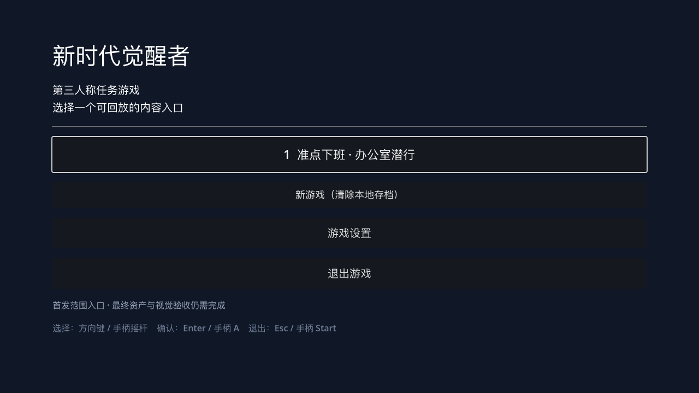
事件：无事件摘要
需要：runtime_screenshot、boot_trace、manual_visual_review
launcher-focus-navigation
unverified
global · 启动器输入
键盘/手柄焦点在办公室、城市和返回控件之间移动
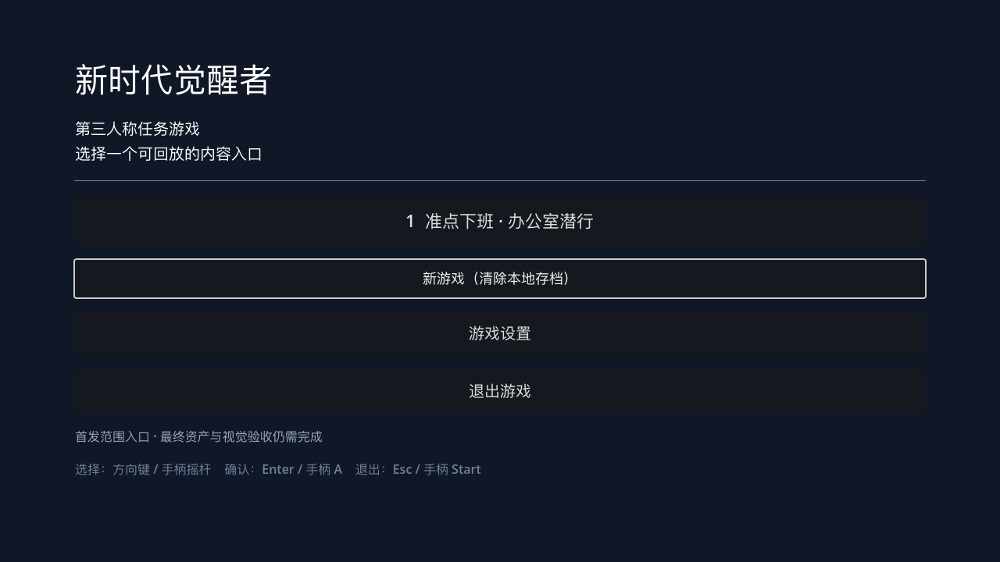
事件：无事件摘要
需要：runtime_screenshot、input_trace、manual_visual_review
office-success-feedback
unverified
office · 办公室任务
准点下班成功、奖励和下一步提示
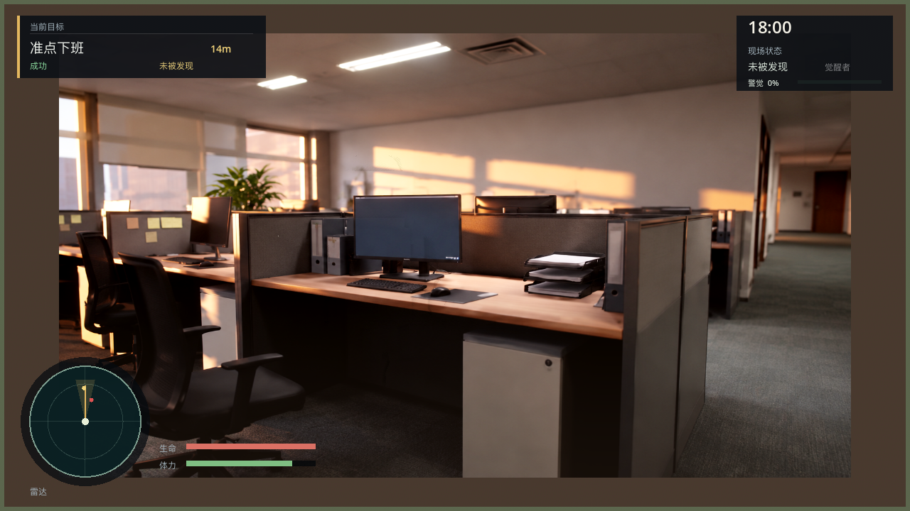
事件：camera_state、mission_state、hud_state、mission_completed、campaign_office_completed、audio_event、visual_capture_ready
需要：runtime_screenshot、mission_trace、manual_visual_review
office-search-loop
unverified
office · 办公室感知扩展
NPC 进入搜索、查看最后目击点并恢复巡查
事件：camera_state、mission_state、hud_state、perception_state、audio_event、npc_search_started、visual_capture_ready
需要：runtime_screenshot、perception_trace、manual_visual_review
office-failure-overlay
unverified
office · 失败与重试
失败原因、重试按钮和场景冻结
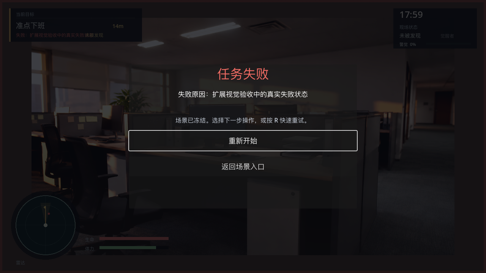
事件：camera_state、mission_state、hud_state、mission_failed、audio_event、visual_capture_ready
需要：runtime_screenshot、failure_trace、manual_visual_review
office-checkpoint-recovery
unverified
office · 存档恢复
从检查点恢复后，角色、NPC、镜头和 HUD 一致
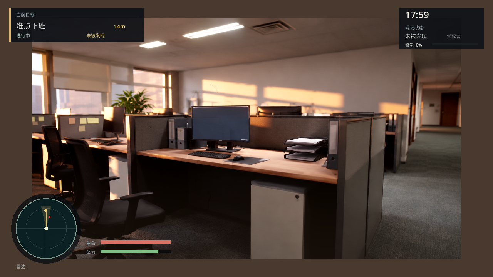
事件：camera_state、mission_state、hud_state、input、checkpoint_loaded、audio_event、visual_capture_ready
需要：before_after_screenshots、checkpoint_trace、manual_visual_review
office-pause-overlay
unverified
office · 暂停与设置
暂停菜单覆盖、继续、重启和返回入口
事件：camera_state、mission_state、hud_state、visual_capture_ready
需要：runtime_screenshot、input_trace、manual_visual_review
office-resolution-variants
unverified
office · 分辨率适配
1280×720、960×540、1920×1080 的 HUD、镜头和交互提示
事件：camera_state、mission_state、hud_state、visual_capture_ready
需要：three_runtime_screenshots、layout_assertions、manual_visual_review
city-store-transition
unverified
city · 城市空间连续性
街道、店内、货架通道和出口连续切换
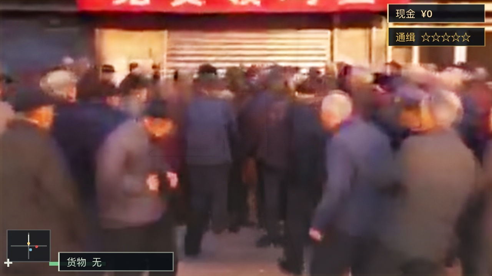
事件：camera_state、visual_profile、hud_state、mission_stage、audio_event、crowd_traffic_avoidance、input、visual_capture_ready
需要：runtime_screenshot、navigation_trace、manual_visual_review
city-crowd-variants
unverified
city · 原创人群扩展
配送员、上班族、买菜居民、街边摊主四类角色在开放道路分层出现；冲突对象具有独立警示轮廓
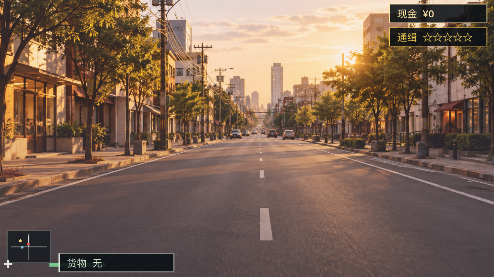
事件：camera_state、visual_profile、hud_state、mission_stage、audio_event、crowd_traffic_avoidance、visual_capture_ready
需要：runtime_screenshot、crowd_trace、performance_snapshot、manual_visual_review
city-traffic-near-miss
unverified
city · 交通与街道风险
行人、交通车辆、三轮车在十字路口近距离交错
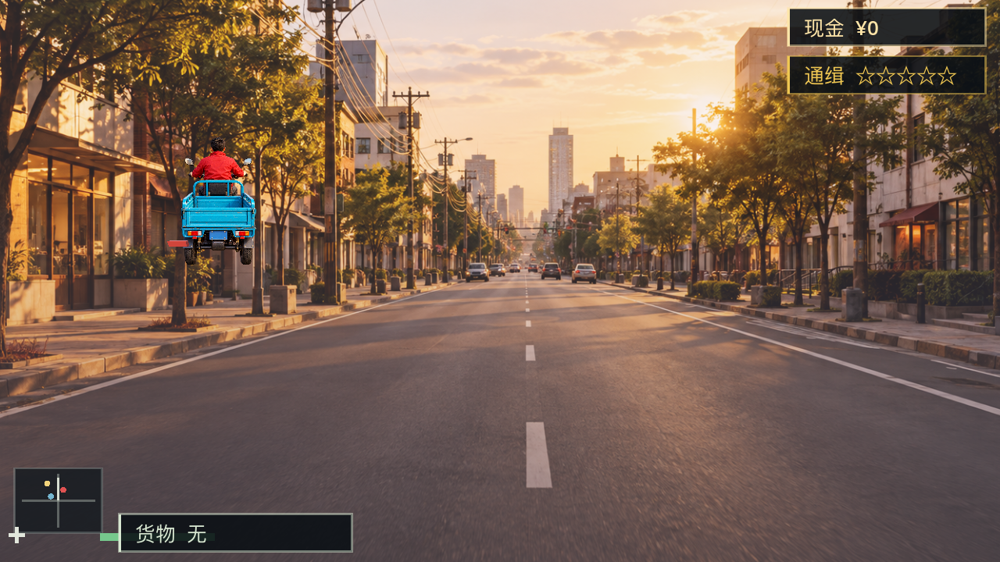
事件：camera_state、visual_profile、hud_state、mission_stage、audio_event、crowd_traffic_avoidance、visual_capture_ready
需要：runtime_screenshot、traffic_trace、performance_snapshot、manual_visual_review
city-vehicle-damage-feedback
unverified
city · 载具反馈
上车、加速、碰撞、减速、下车和损伤/失败提示
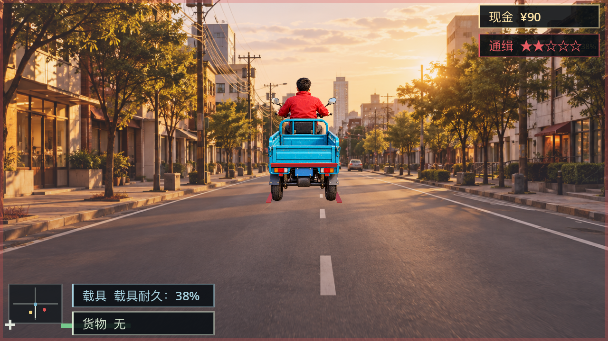
事件：camera_state、visual_profile、hud_state、mission_stage、audio_event、crowd_traffic_avoidance、input、inventory_changed、conflict_encounter_armed、interaction、navigation、side_activity_unlocked、clerk_interaction、vehicle_driver、pedestrian_near_miss、wanted_level、vehicle_damage、visual_capture_ready
需要：runtime_screenshot、vehicle_trace、manual_visual_review
city-delivery-completion
unverified
city · 扩展任务收束
抵达新店、交付物品、奖励结算和街区状态更新
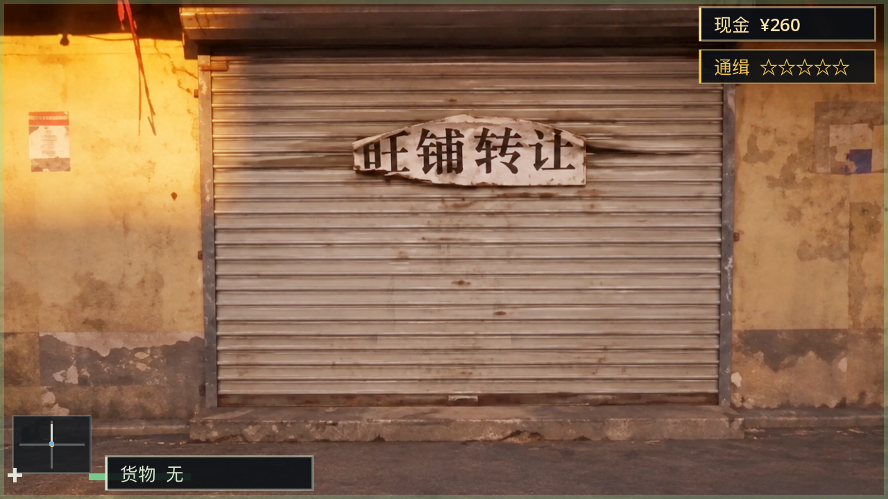
事件：camera_state、visual_profile、hud_state、mission_stage、audio_event、crowd_traffic_avoidance、input、inventory_changed、conflict_encounter_armed、interaction、navigation、side_activity_unlocked、clerk_interaction、neighborhood_entered、stock_loaded、stock_delivered、campaign_city_completed、mission_completed、vehicle_driver、visual_capture_ready
需要：runtime_screenshot、mission_trace、manual_visual_review
city-neighborhood-extension
unverified
city_expansion · 新街区
巷道、后场、仓储点和新的可读地标
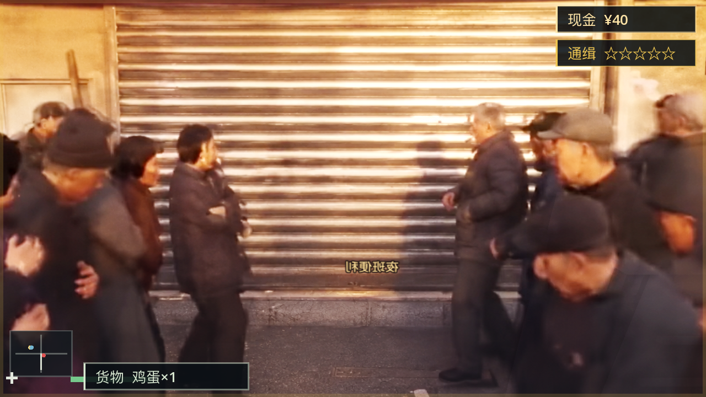
事件：camera_state、visual_profile、hud_state、mission_stage、audio_event、crowd_traffic_avoidance、input、inventory_changed、conflict_encounter_armed、interaction、navigation、side_activity_unlocked、vehicle_driver、neighborhood_entered、visual_capture_ready
需要：runtime_screenshot、content_pack_trace、manual_visual_review
city-weather-lighting-extension
unverified
city_expansion · 时间与天气
白天、黄昏、雨后地面和室内外光照过渡
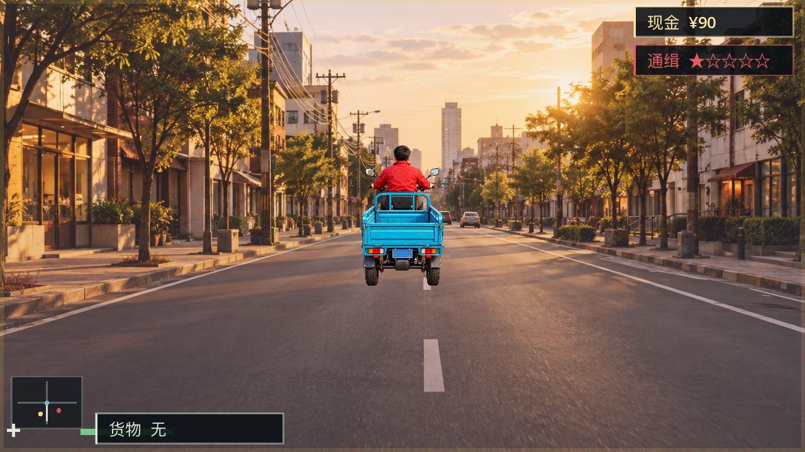
事件：camera_state、visual_profile、hud_state、mission_stage、audio_event、crowd_traffic_avoidance、input、inventory_changed、conflict_encounter_armed、interaction、navigation、side_activity_unlocked、clerk_interaction、vehicle_driver、pedestrian_near_miss、wanted_level、visual_capture_ready
需要：multiple_runtime_screenshots、lighting_config、manual_visual_review
global-audio-disabled-fallback
unverified
global · 反馈降级
关闭音频后，HUD、字幕和图标仍能表达关键反馈
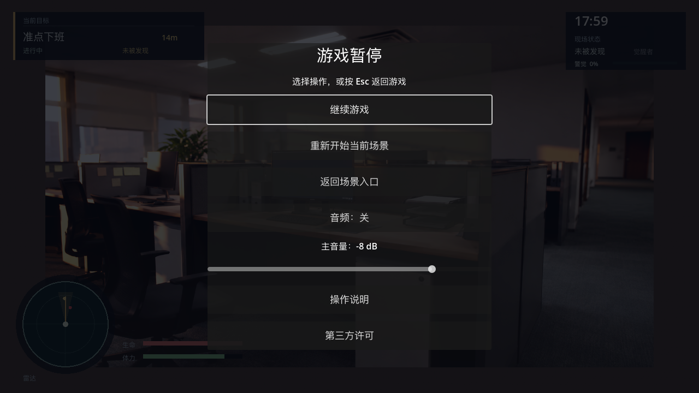
事件：camera_state、mission_state、hud_state、visual_capture_ready
需要：before_after_screenshots、settings_trace、manual_visual_review
global-crash-recovery-prompt
unverified
global · 异常退出恢复
异常退出后启动器显示恢复提示，并能安全回到存档
事件：无事件摘要
需要：before_after_screenshots、session_trace、manual_visual_review
global-missing-asset-blocked
unverified
global · 资产失败保护
正式资产缺失时显示可理解的阻断，不静默退回灰盒
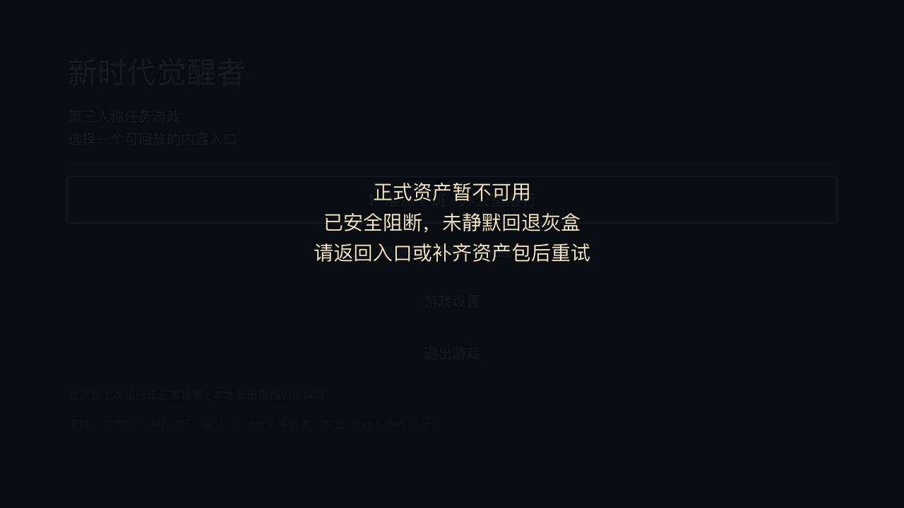
事件：无事件摘要
需要：runtime_screenshot、asset_error_trace、manual_visual_review